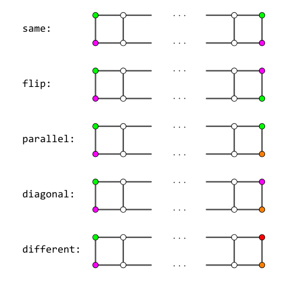

给定 $2 \times n$ 的格点图。其中一些结点有着已知的颜色，其余的结点还没有被染色。一个合法的染色方案不允许相邻结点有相同的染色。
现在一共有 $c$ 种不同的颜色，依次记为 $1$ 到 $c$。请问有多少对未染色结点的合法染色方案？
第一行包含两个正整数 $n, c$ ($1 \leq n \leq 10^5; 5 \leq c \leq 10^5$)，分别描述了格点图的大小和颜色的个数。
接下来两行，每行包含 $n$ 个非负整数 $a_{i, j}$ ($0 \leq a_{i, j} \leq c$)。如果是 $0$ 则表示对应结点未被染色，否则表示对应结点上被染的颜色编号。
输出一行一个整数，为染色方案总数对 $10^9 + 9$ 取模后的值。
显然有一个非常弱智的 DP：用 $f_{i, c_1, c_2}$ 表示当前到第 $i$ 列，上下的颜色分别为 $c_1, c_2$，前面 $i$ 列的方案数，转移显然。状态数 $O \left( n c^2 \right)$，转移 $O \left( c^2 \right)$。
考虑优化这个过程——首先我们要优化状态数。显然记 $c_1, c_2$ 是不现实的 (太浪费了)，那么如何才能减少状态数呢？
注意到对于第 $i$ 列，如果已经有至少一个节点已经染色，则这一列的状态数就可以缩减到 $O \left( c \right)$。因此，我们希望这样的 "关键列" (至少一个节点已经染色的列) 越多越好。
但是关键列较少的时候该怎么处理呢？考虑相邻两个关键列，它们中间的点全都是未染色的。
如果两个关键列的染色方法是确定的，则中间这些节点的染色方案数，如果忽略长度影响，只有 $5$ 种本质不同的状态，如下图所示：
(ps: 按照状态的等价性来说，上端颜色不同且下端颜色相同和状态 parallel 是本质相同的)
容易发现，如果中间全是未染色的点，则当 $c$ 确定时，总方案数只和它是哪一种状态 $id$ 和未染色段的长度 $L$ (线段数) 有关，与具体染的什么颜色无关 (图中的颜色只是作为例子)，且均为一个关于 $c$ 的不超过 $2 L - 2$ 次多项式。以下将这个量记为 $tr_{L, id}$。
(ps: $tr_{L, id}$ 的严格定义为：当角上的四个颜色确定且为满足 $id$ 号状态时，中间 $2 L - 2$ 个点的染色方案数，可以证明，这个值只和 $L$ 与 $id$ 有关)
设 $\mathbf{tr}_L = \begin{bmatrix} tr_{L, 0} \\ tr_{L, 1} \\ tr_{L, 2} \\ tr_{L, 3} \\ tr_{L, 4} \end{bmatrix}$，则考虑转移矩阵，有 $$ \mathbf{tr}_{L + 1} = \begin{bmatrix} 0 & 1 & 0 & 2 c - 4 & \left( c - 2 \right) \left( c - 3 \right) \\ 1 & 0 & 2 c - 4 & 0 & \left( c - 2 \right) \left( c - 3 \right) \\ 0 & 1 & c - 2 & 2 c - 5 & \left( c - 3 \right)^2 \\ 1 & 0 & 2 c - 5 & c - 2 & \left( c - 3 \right)^2 \\ 1 & 1 & 2 c - 6 & 2 c - 6 & c^2 - 7 c + 13 \end{bmatrix} \cdot \mathbf {tr}_L $$ (具体证明此处略去)
这样一来，对于相邻的两个关键列，可以通过数组 $tr_{L, id}$ 进行转移了，因此状态数就能缩减到 $O \left( c \right)$，转移 $O \left( c \right)$，从而总复杂度就是 $O \left( n c^2 \right)$ 了。
仔细分析一波，可以发现转移分为四类：
(brute) 两个关键列均有两个点染色；
(open) 左边的关键列有两个点染色，右边的关键列只有一个点染色；
(close) 左边的关键列只有一个点染色，右边的关键列有两个点染色；
(move) 两个关键列均只有一个点被染色。
brute 型转移非常简单，直接将答案乘以对应的 $tr_{L, id}$ 即可。
对于 open 型转移，设转移为 $\left( l_1, l_2 \right) \to r$，则只需要关注新的颜色是否等于 $l_1, l_2, r$ 即可。
对于 close 型转移 (设转移为 $l \to \left( r_1, r_2 \right)$)，形式也是类似的。
对于 move 型转移 $l \to r$，需要关注两端颜色是否相同、是否等于 $l, r$ 即可。
于是总复杂度可以做到 $O \left( n c \right)$，不过还是无法通过 $n, c \leq 10^5$ 的数据。
考虑用数据结构优化 DP。
对于 open 型转移，根据 $l_1, l_2, r$ 是否相同，可以看成一个区间赋值与 $O \left( 1 \right)$ 次单点修改。
对于 close 型转移，根据 $l, r_1, r_2$ 是否相同，可以看成一个区间求和与 $O \left( 1 \right)$ 次单点求值。
对于 move 型转移，可以写出类似地方程：$f_i = A f_i + B$，其中 $A, B$ 可以通过一次区间求和以及常数次单点求值得到。于是可以看成一次全局乘法、全局加法以及常数次单点修改。
不难发现，这些操作都是 [SDOI2019]快速查询 中的操作！ (SDOI 又开始 我 抄 我 自 己 啦！)
于是直接将那里的代码拷过来使用那道题的全局维护思想即可，并需要使用高级数据结构。总时间复杂度 $O \left( n + c \right)$。
#include <bits/stdc++.h>
typedef long long ll;
const int N = 100054, mod = 1000000009;
const int fy[10] = {4, 2, 3, -1, 3, -1, 1, -1, 2, 0};
inline int & reduce(int &x) {return x += x >> 31 & mod;}
inline void add(int &x, const int y) {reduce(x += y - mod);}
inline void sub(int &x, const int y) {reduce(x -= y);}
ll PowerMod(ll a, int n, ll c = 1) {for (; n; n >>= 1, a = a * a % mod) if (n & 1) c = c * a % mod; return c;}
namespace pb_ds {
int n, ti = 0, K = 1, B = 0, d, sum = 0;
int x[N], tag[N];
inline int & recover(int id) {return tag[id] == ti ? x[id] : (tag[id] = ti, x[id] = 0);}
int Do(int ty, int id = 0, int val = 0) {
switch (ty) {
case 1: return add(sum, val), reduce(sum = (sum - ((ll)K * recover(id) + B)) % mod), sub(val, B), x[id] = PowerMod(K, mod - 2, val), 0;
case 2: return add(B, val), 0;
case 3: return val ? (K = (ll)K * val % mod, B = (ll)B * val % mod, sum = (ll)sum * val % mod, 0) : (++ti, K = 1, B = sum = 0);
case 4: return ++ti, K = 1, B = val, sum = 0;
case 5: return ((ll)K * recover(id) + B) % mod;
case 6: return (sum + (ll)B * n) % mod;
}
return -1;
}
}
#define Set(id, val) pb_ds::Do(1, id, val)
#define Add(val) pb_ds::Do(2, 0, val)
#define Mul(val) pb_ds::Do(3, 0, val)
#define Cov(val) pb_ds::Do(4, 0, val)
#define Get(id) (ll)pb_ds::Do(5, id)
#define Sum() (ll)pb_ds::Do(6)
int n, m = 0, C;
int Up[N], Dn[N], pos[N];
int Tr[N][5];
inline void matmul(const int (*M)[5], int *v, int *ret) {
for (int i = 0; i < 5; ++i)
for (int j = 0; j < 5; ++j) ret[i] = (ret[i] + (ll)M[i][j] * v[j]) % mod;
}
void init_matrix() {
const int u = C - 2, v = C - 3, uv = (ll)u * v % mod, vv = (ll)v * v % mod, mat[5][5] = {
{0, 1, 0, 2 * u, uv},
{1, 0, 2 * u, 0, uv},
{0, 1, u, u + v, vv},
{1, 0, u + v, u, vv},
{1, 1, 2 * v, 2 * v, int((C * (C - 7ll) + 13) % mod)}
};
for (int i = **Tr = 1; i <= n; ++i) matmul(mat, Tr[i - 1], Tr[i]);
}
inline int segment(int l1, int l2, int r1, int r2, int *tr) {return tr[fy[(l1 == r1) | (l1 == r2) << 1 | (l2 == r1) << 2 | (l2 == r2) << 3]];}
void open(int l1, int l2, int r, int *tr) {
if (l1 == r) Cov(tr[2]), Set(l2, tr[0]);
else if (l2 == r) Cov(tr[3]), Set(l1, tr[1]);
else Cov(tr[4]), Set(l1, tr[3]), Set(l2, tr[2]);
Set(r, 0);
}
void move(int l, int r, bool diagonal, int *tr) {
int diff; ll sum = Sum(), v;
if (l == r) reduce(diff = tr[diagonal] - tr[2 | diagonal]), Mul(diff), Add(sum * tr[2 | diagonal] % mod);
else {
sum -= v = Get(r), sum += sum >> 63 & mod;
reduce(diff = tr[2 | diagonal] - tr[4]), Mul(diff), Add((sum * tr[4] + v * tr[2 | !diagonal]) % mod);
Set(l, (sum * tr[2 | !diagonal] + v * tr[!diagonal]) % mod);
}
Set(r, 0);
}
int close(int l, int r1, int r2, int *tr) {
int ret;
if (l == r1) ret = (Sum() * tr[2] + Get(r2) * (tr[0] - tr[2])) % mod;
else if (l == r2) ret = (Sum() * tr[3] + Get(r1) * (tr[1] - tr[3])) % mod;
else ret = (Sum() * tr[4] + Get(r1) * (tr[3] - tr[4]) + Get(r2) * (tr[2] - tr[4])) % mod;
return reduce(ret);
}
int main() {
int i, u, d, lu, ld, t, *tr, ans = 1;
scanf("%d%d", &n, &C), init_matrix();
for (i = 0; i < n; ++i) scanf("%d", Up + i);
for (i = 0; i < n; ++i) scanf("%d", Dn + i);
for (i = 0; i < n; ++i) if (Up[i] || Dn[i])
if (pos[m++] = i, Up[i] == Dn[i]) return putchar(48), putchar(10), 0;
if (!m) return printf("%lld\n", PowerMod((C * (C - 3ll) + 3) % mod, n - 1, C * (C - 1ll) % mod)), 0;
t = PowerMod((C * (C - 3ll) + 3) % mod, *pos), pb_ds::n = C;
u = Up[*pos], d = Dn[*pos], u && d ? ans = t : (Add(t), Set(u | d, 0), 0);
for (i = 1; i < m; ++i) {
lu = u, ld = d, u = Up[pos[i]], d = Dn[pos[i]], tr = Tr[pos[i] - pos[i - 1]];
if (u && d)
ans = (ll)ans * (lu && ld ? segment(lu, ld, u, d, tr) : close(lu | ld, lu ? u : d, lu ? d : u, tr)) % mod;
else
lu && ld ? open(u ? lu : ld, u ? ld : lu, u | d, tr) : move(lu | ld, u | d, !lu ^ !u, tr);
}
if (!(u && d)) ans = (ll)ans * Sum() % mod;
printf("%lld\n", PowerMod((C * (C - 3ll) + 3) % mod, n - 1 - pos[m - 1], ans));
return 0;
}
坑1：转移的时候需要判断两个同色点在同一行还是不同行，从而判断是 same 还是 flip，parallel 还是 diagonal。具体可以通过传一个 diag 参数然后 ^ 1 来实现。
坑2：注意对无解情况的处理，以及对第一个关键列的左边和最后一个关键列的右边的处理。还有就是对所有 $a_{i, j}$ 均为 $0$ 的特判 (然而数据中貌似并没有这样的点)。